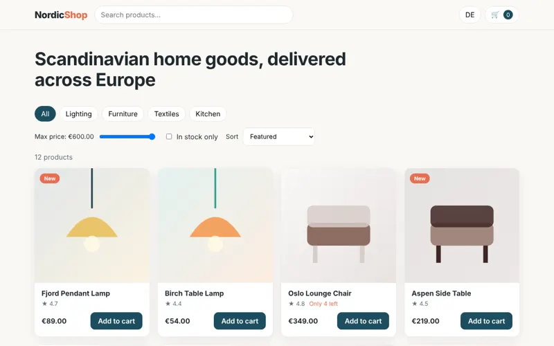
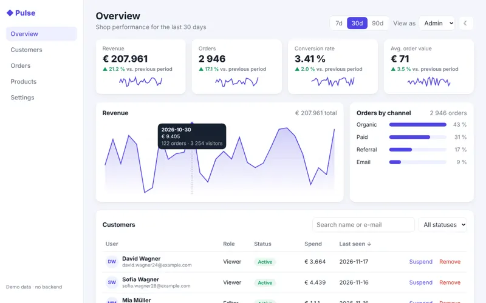
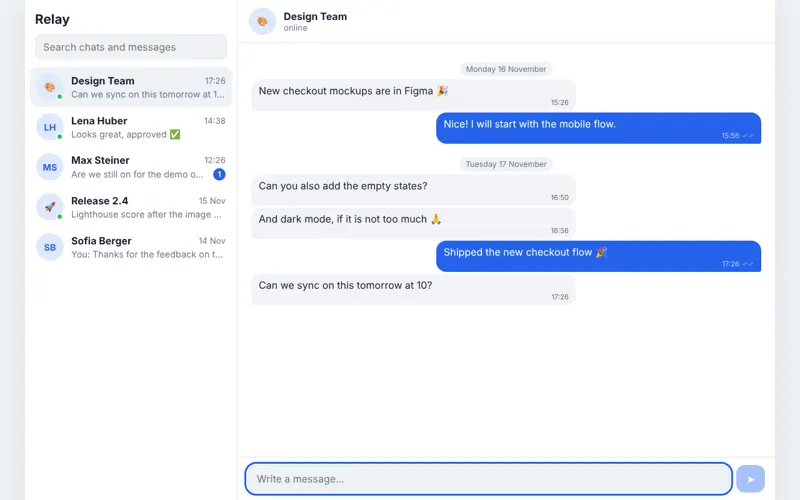
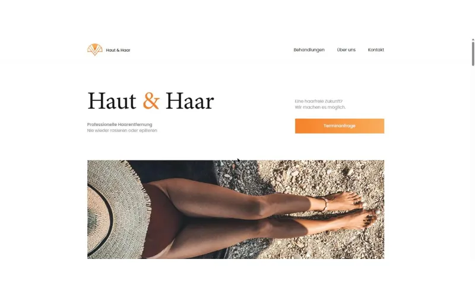

13+ years building SaaS products, enterprise banking platforms (Bank of America, Morgan Stanley), online stores, chats, dashboards and mobile apps with React, Next.js and TypeScript. Based in Tyrol, Austria – open to roles across Austria and remote.
Live demos with source code – click through them, they are fully interactive.




Performance-first website for a beauty studio in Tyrol – Google PageSpeed score of 100.
Performance · SEO · responsive design Live siteMore: DD up studio website (Gatsby + headless Strapi, DE/EN) · LexMemo (React Native / Expo vocabulary app).
Most of my professional code is private (NDA) – happy to walk you through it in a call.
Core frontend engineer on a fintech SaaS platform (Next.js, React 19, TypeScript): dashboards, data-heavy tables, multi-step flows, AI chat features, unit and end-to-end tests.
Bank of America and Morgan Stanley: internal products, admin panels with access control, web portal and analytics dashboard.
Frontend development in a remote product team.
Online stores with cart and payments, React Native mobile apps, corporate websites with CMS and REST integrations.
Product UIs, dashboards, e-commerce, chats, portals, websites and mobile apps – React, Next.js, Angular, Vue, React Native.
Strict TypeScript, Vitest and Playwright tests, CI with GitHub Actions, fast pages (PageSpeed 100).
Claude Code and Codex in daily work for implementation, review and tests; AI features with the Vercel AI SDK and Gemini.